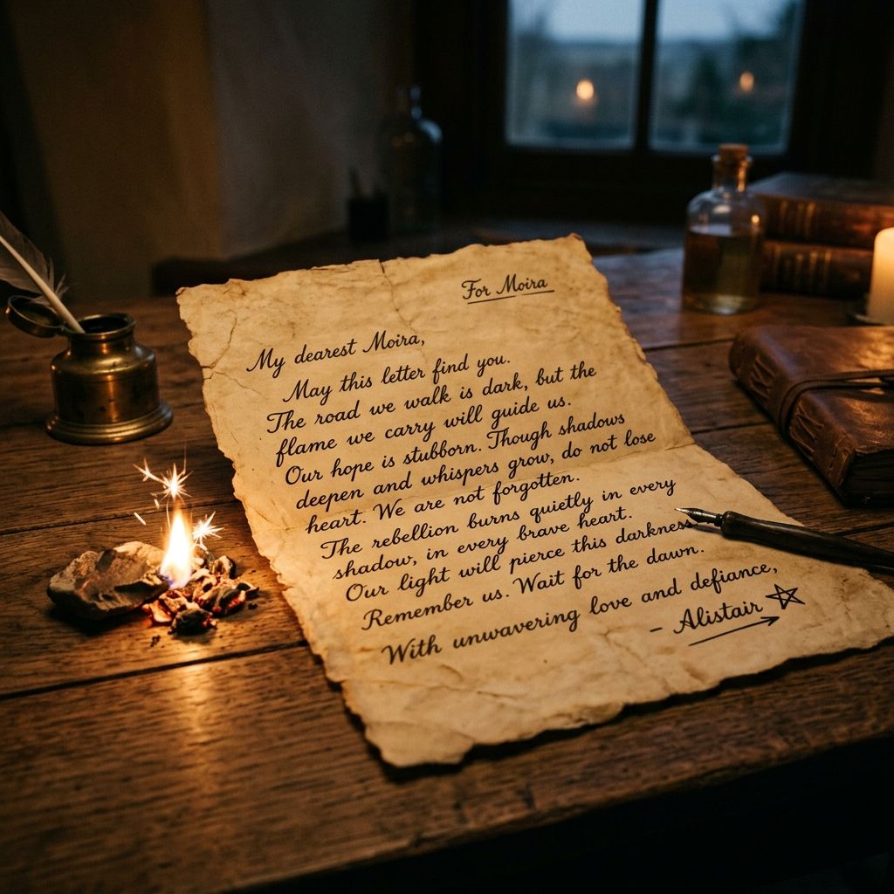

Write a letter to a character in your story.
Dear Moira,
I’m unsure whether you will even see this, but if you do, considering Offred saw you at Jezebel’s, then you’re probably dead. Regardless, I am writing to simply tell you that you have been the bravest person throughout this entire story. The fact that you came up with a way to fake an illness; that you ripped down the toilet and threatened Aunt Elizabeth – each of those actions gave the other women in this oppressive world a glimmer of hope. What you did showed them that they weren’t powerless. While I know that eventually they caught up to you and broke your spirit by forcing you to dance at the club, that one act of defiance has proven how difficult it is to completely extinguish the desire for freedom from within people.
Sincerely,
Mahmoud Atwa

References:
- Atwood, Margaret. The Handmaid's Tale. Random House, 1986